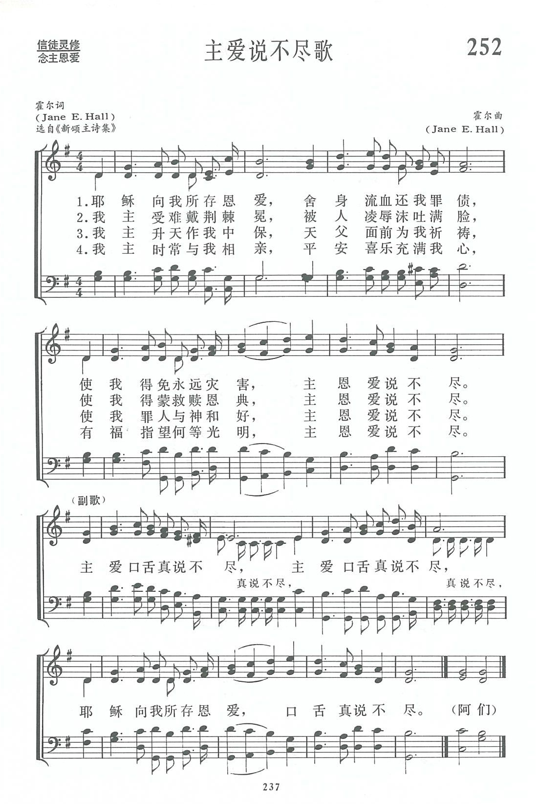

|
|
|
|
1. The love that Jesus had for me, Refrain 2. The many sorrows that He bore, 3. The peace I have in Him, my Lord, 4. The joy that comes when He is near, |
|
|
https://www.zanmeishige.com/tab/13925.html?songbook=1&index=252

|
|
|
|
|


CD08-07-主爱说不尽 https://youtu.be/1S_dqeUnCzs -
252主爱说不尽歌[
https://youtu.be/SiuHMgp46KM - The Love That Jesus Had for Me (More Than Tongue Can Tell)
https://youtu.be/ijpOE7utPOw - The love that Jesus had for me - Gospel Hymns
https://youtu.be/1SfPTO88lgQ
| Text: | More Than Tongue Can Tell |
| Author: | J. E. H. |
| Tune: | [The love that Jesus had for me] |
| Composer: | J. E. Hall |
| Short Name: | Jonathan E. Hall |
| Full Name: | Hall, Jonathan E. |
19th Century
We know little of Hall, except that he was a minister. Most hymnals list him as "J. E. Hall," but his first name, John, is shown in "The Finest of Wheat," by George C. Elderkin (Chicago, Illinois: R. R. McCabe & Company, 30th edition, 1890), number 91.
Tune Information
| Title: | [The love that Jesus had for me] |
| Composer: | Jonathan E. Hall (1879) |
| Incipit: | 51235 64335 65132 |
| Key: | G Major |
| Copyright: | Public Domain |
第252首 主爱说不尽歌 O HIS LOVE IS MORE THAN TONGUE CAN TELL _J．E．Hall
经文：“惟有基督在我们还作罪人的时候为我们死，神的爱就在此向我们显明了”(罗5：8)。
这首诗的词和曲都是霍尔夫人所作。霍尔夫人(Mrs．J．E．Hall，182O一1889，见第334注①)是一位普通的女信徒。
她和她的丈夫都是美国巴尔的摩纪念碑街美以美会信徒，参加主日礼拜四十年如一日，从不间断，因为她有深刻的感受一“主恩爱说不尽”。